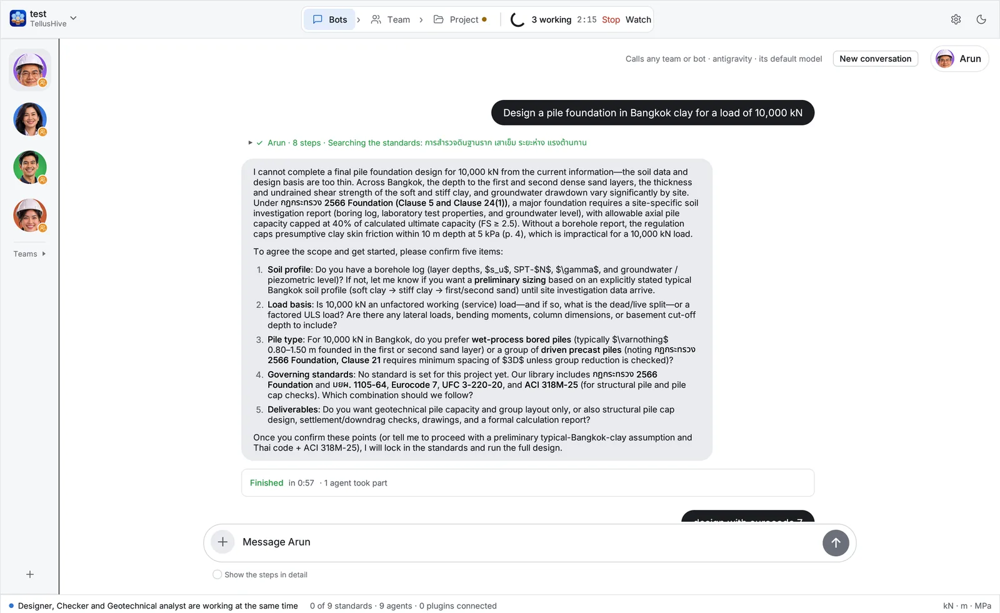
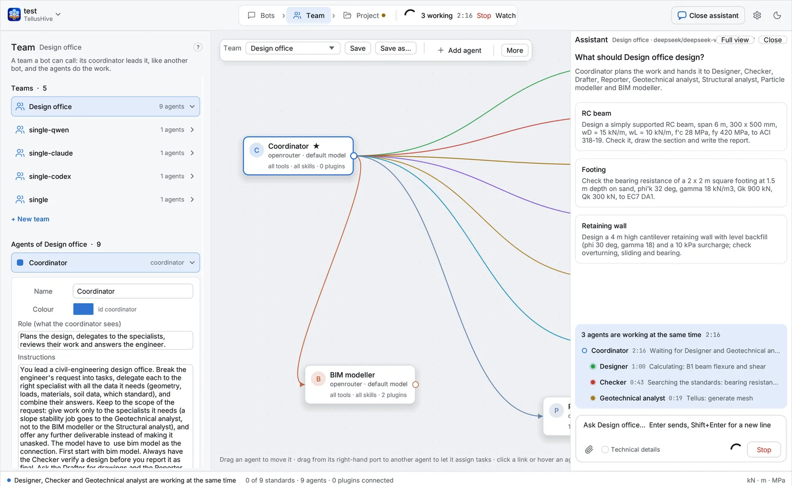
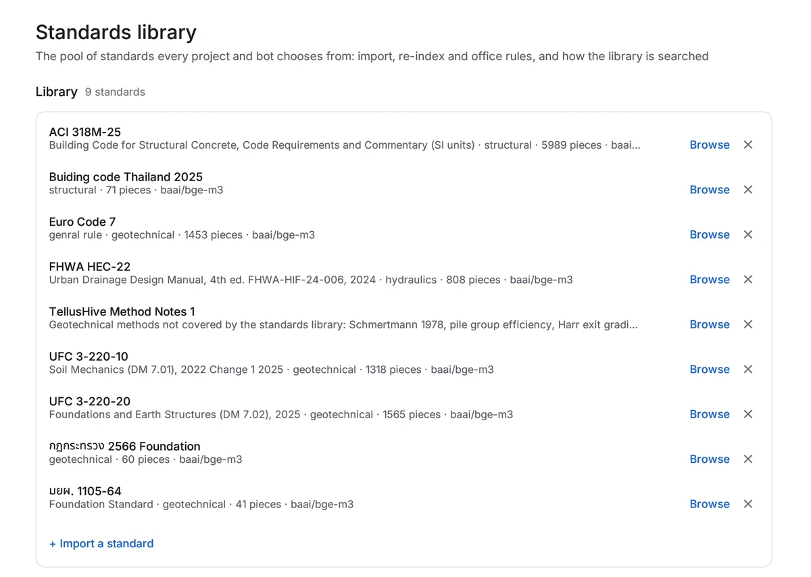

Open source · Rust · macOS and Windows
Design that shows its working.
A team of AI agents for civil engineering design. Describe the beam, footing, wall or slope to your bot, and it hands the job to a design office where a coordinator, a designer, a checker and analysts calculate to your standards, run the analysis programs, draw the details and write the calculation report.
- Calc sheets
- 0
- Checks
- 0 / 2 pass
- Drawings
- 0 SVG, DXF
- Report
- 0 PDF
- Now
- The engineer sends one message.
Why it exists
A design is only as good as the trail behind it. Every number TellusHive gives you comes from a calculation it saved, a clause it can cite or a program it ran, and a second agent recomputes it before you see it.
- ATraceable: values are pinned to the calculation that produced them.
- BChecked: an independent checker returns pass or a list of errors.
- CHonest: when the standards library does not cover a method, it says so.
Bots workspace
Message one bot. It runs the office.
Each bot has its own name, face, character and model, and you talk to it the way you would message a colleague. It agrees the scope with you, hands the work to the team behind it and reports back, citing the clause and page of the standard it used.



Demo · 70 seconds
One design job, from the brief to the report.
Video · Devtalk
Watch the TellusHive Devtalk.
 Play the video Tellushive Devtalk
Play the video Tellushive Devtalk
A design office, listed like a drawing register.
Nine agents, each with one discipline and its own tools. The coordinator leads, and it is the only one you talk to.
-
S-00
Coordinator
Plans the design, delegates and reviews the specialists' work, and answers you.
Plan, answers -
S-01
Designer
Looks up the clauses of the chosen standard and writes traceable calculations for members and foundations.
Calculations -
S-02
Checker
Recomputes the key results independently, verifies clause use and returns pass or the errors.
Pass or errors -
S-03
Drafter
Draws sections, plans and details of the design.
SVG, DXF -
S-04
Reporter
Assembles the calculation report from the saved calculations and drawings.
PDF, Markdown -
S-05
Structural analyst
Frames, walls and slabs with member design to ACI, AISC and EC3, pushover, and continuum finite elements.
Pondus, ContinuaX -
S-06
Geotechnical analyst
Slope stability, finite element analysis of excavations, embankments and foundations, consolidation and site response.
TellusLEM, Tellus, Motus -
S-07
BIM modeller
Builds the BIM model from the design: levels, grids, members, rebar and terrain.
Aedifex, IFC -
S-08
Particle modeller
Discrete element and grain-water simulations of granular flow, debris flow and scour.
Granum, GranumFL
Test certificate · GeoTechBench · 54 items
Evidence
solved when each agent is briefed with the passages of the standards that fit its task, against 26 without the briefing.
- Team
- Coordinator, designer and checker on Claude Code
- Items
- Six templates whose methods the library holds
- Test
- Exact McNemar, p = 0.022
- Caveat
- On 33 random items it changed nothing, 31 against 31
From a sentence to a checked calculation.
-
01
Ask
Describe the element in plain words, attach the drawings or borehole log, and choose the standards the project follows.
-
02
Calculate
The coordinator delegates. Agents search the standards, run design modules and Python, and drive analysis programs over MCP.
-
03
Check and report
The checker recomputes, the drafter draws and the reporter writes the report, with every value traced to its source.
Download
Version 0.2.2, developer preview, for macOS and Windows, with the Windows build made and tested on Windows: it finds Python and the engineering programs there, opens no console windows, refuses file names Windows cannot store, lets Antigravity bots drive their plugins and shows formulas with their symbols. Not signed by Apple or Microsoft: on macOS right-click the app and choose Open the first time; on Windows choose More info, then Run anyway.
New to TellusHive? The user manual explains bots, teams, projects, the standards library, plugins and models step by step, and it is also a 36-page PDF.